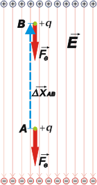

NO ME SALEN
(APUNTES TEORICOS DE BIOFÍSICA DEL CBC)
ELECTRICIDAD
ELECTROSTATICA - DIFERENCIA DE POTENCIAL
|
|

|
| |
ENERGIA POTENCIAL ELECTRICA, (Epe)
Si una carga se encuentra dentro de un campo eléctrico, y sólo por el hecho de estar ahí, esa carga posee energía. El motivo es obvio: basta con soltarla y verificar que comienza a moverse. Le pasa lo mismo que a un cuerpo cualquiera que se mueve si es soltado a cierta altura: comienza a caer sometido por la fuerza peso. A la carga le ocurre otro tanto: comienza a "caer" sometida por la fuerza eléctrica. Una lo hace en el campo gravitatorio, la otra en el campo eléctrico.
Voy a relacionar el trabajo de la fuerza eléctrica con la variación de energía que sufre por cambiar de posición (por cambiar de "altura").
|
| |
Movamos una carga de prueba positiva, q, en un campo uniforme, E, desde la posición A hasta la posición B, en contra de la fuerza eléctrica, Fe, de repulsión que se opone a este movimiento; por lo tanto, estará haciendo un trabajo negativo. Como el campo es constante la fuerza eléctrica también lo es, de modo que puedo calcular su trabajo con la expresión de trabajo para fuerzas constantes:
WAB = Fe . Δx . cos α
WAB = E . q . Δx . cos 180º
WAB = – E . q . Δx
El trabajo que hicimos nosotros para mover la carga (no el de la fuerza eléctrica) la coloca en una posición en la que evidentemente tiene más energía que antes (alcanza con imaginar qué ocurriría si se suelta desde A o si se suelta desde B). |
 |
|
|
|
Esta descripción es absolutamente análoga a la de subir un cuerpo en el campo gravitatorio: cuanto más arriba se encuentre mayor será su energía potencial gravitatoria. Acá es igual.
WAB = – (E q xB – E q xA)
WAB = – ΔEpe
La forma de la expresión de la energía potencial eléctrica depende del tipo de campo eléctrico en que se mueva la carga. Pero lo que a vos te tiene que quedar en limpio de esta cuestión son dos cosas: que cuando la fuerza eléctrica mueve una carga, la hace "caer" a una posición en la que tendrá menor energía potencial eléctrica; y el valor de la energía no importa... lo que importa es la diferencia de energía.
DIFERENCIA DE POTENCIAL ELECTRICO, o TENSION, o VOLTAJE, (ΔV)
Pero todo lo que habíamos avanzado con la idea de campo, lo volvimos a retroceder con la definición de energía... a qué me refiero: te recuerdo que la gran innovación de la idea de campo era que describía el espacio como una propiedad intrínseca, que no necesitaba de la presencia de una carga de prueba para establecerse, ¿te acordás? Y como ves, para calcular la energía eléctrica necesitamos el valor de la carga; o sea: el héroe de la película "energía" no es el lugar sino quien lo ocupa.
Si lo que nos interesa es volver a la idea de posición, lugar, espacio, procedamos de la misma manera que lo hicimos cuando definimos al campo: dividamos la expresión de energía por el valor de la carga que ocupa el sitio. La magnitud que obtenemos es, sin duda, la más famosa de la electricidad: el voltaje, cuyo nombre científico es diferencia de potencial, y se simbiliza ΔV. Procedamos:
|
|
E solita es campo.
ΔE es diferencia de energía.
No hay posibilidad de confundirlas porque no se usa variación de campo ni energía sola.
También te ayuda el prestar atención a las unidades. |
| ΔVAB = |
|
WAB |
= — |
ΔEAB |
= — E ΔxAB (sólo para campos constantes) |
|
|
| q |
q |
|
|
|
(diferencia de potencial = campo x diferencia de posición)
Y también:
(energía = carga x diferencia de potencial) [1]
La unidad en la que se miden las diferencias de potencial es el volt (V), que se relaciona con otras unidades de esta manera:
|
|
|
| [ΔV] = V |
= |
J |
1 volt = |
1 joule |
|
|
|
| C |
1 coulomb |
|
|
|
De esta relación surge la que te había anticipado antes, en el capítulo de campo, cuando te presenté sus unidades: recordando que un joule es un newton por un metro, obtenemos: |
|
|
| |
|
|
Como podés observar el potencial es una propiedad del lugar, no depende de la carga que lo ocupe. Con esta magnitud ocurre lo mismo que con la energía: no importa cuánto vale en forma absoluta sino cuánto vale su diferencia con el potencial de otro lugar. A ello obedece su nombre: diferencia de potencial, que con el uso de jerga ha pasado a ser sinónimo de voltaje (por la unidad con que se mide) o tensión.
No importa demasiado cuál es el potencial de los agujeritos de los enchufes de casa. Lo que importa es que la diferencia de potencial entre dos de los agujeritos simétricos de los enchufes de casa (en otra página te cuento qué pito toca el tercer agujerito) sea de 220 V. Si así no fuese los artefactos no andarían o andarían mal.
En la lección que sigue cuento más o menos lo mismo desde un abordaje diferente. Creo que vale la pena.
CHISMES IMPORTANTES: |
|
|
- Una unidad de energía muy utilizada para describir las propiedades eléctricas del microcosmos es el electrón-volt, eV, que es la energía que adquiere un electrón (o cualquier cuerpo con una carga igual a la de un electrón) cuando se encuentra sometido a una diferencia de potencial de 1 volt. La expresión [1] explica y valida esta relación.
- Los valores de diferencia de potencial más famosos son: 1,5 V en pilas, 12 V en baterías de autos, 220 V en las instalaciones domiciliarias.
- Casi todas las células animales mantienen una diferencia de potencial entre el interior y el exterior (con el potencial menor en el interior) cuyo promedio ronda los 70 mV; las pilas que alimentan y mantienen esta diferencia de potencial son las bombas iónicas que funcionan quemando energía química en forma de ATP.
- Las células nerviosas de todos los animales, desde el hombre hasta los calamares, utilizan súbitas variaciones de la diferencia de potencial en su membrana plasmática que se va contagiando y autopropagando por la superficie.
|
|
|
| PREGUNTAS CAPCIOSAS: |
|
 |
- ¿Cuánto vale la intensidad del campo eléctrico en una membrana plasmática típica de un axón, si su espesor vale 5 nm y la diferencia de potencial 70 mV?
- ¿Cuántos electrón-volts equivalen a 1 joule?
|
|
| |
|
| Algunos derechos reservados.
Se permite su reproducción citando la fuente. Está absolutamente prohibido colgarse de los cables de tensión del vecino. Última actualización oct-07. Buenos Aires, Argentina. |
|
|
 |
| | |
|
|